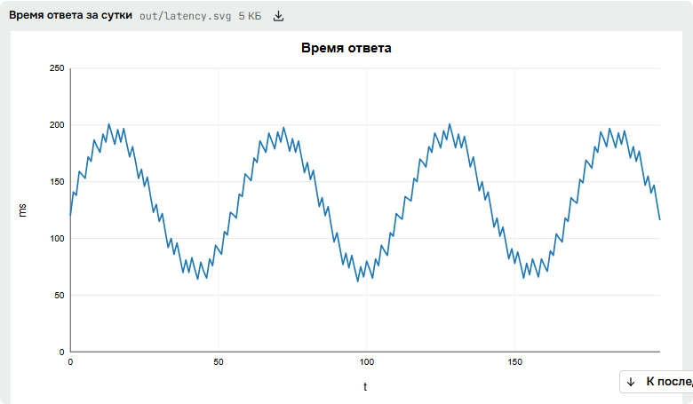
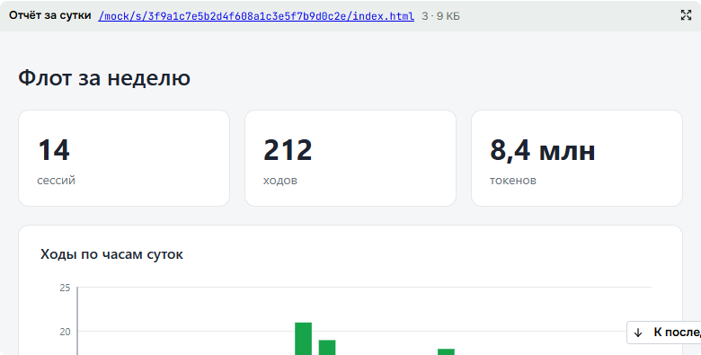
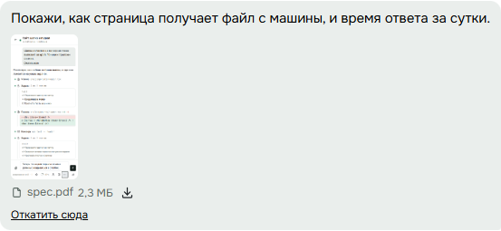
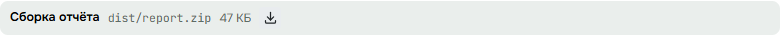
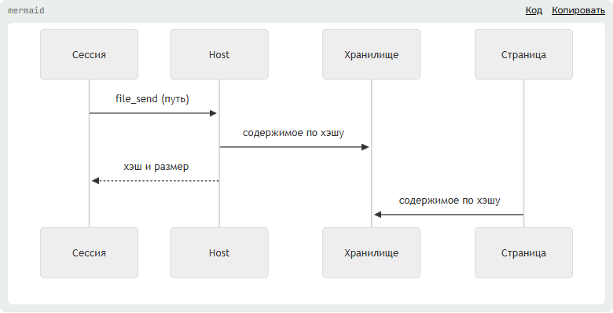
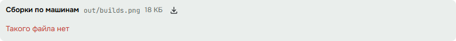

<title>Файлы сессии</title>
<meta name="claude:viewport-fit-sides" content="cover">
<link rel="stylesheet" href="https://fonts.googleapis.com/css2?family=Inter:wght@400;500;600&family=Space+Grotesk:wght@500;600&family=JetBrains+Mono:wght@400;500&display=swap">
<style>
/* раскладка: три потока на одном хранилище (схема с переключателем) → что видит человек (снимки прототипа) → замеры и опыты → инструменты и уведомление → эталоны → развилки → гейт → порядок */
:root {
  --bg: #f6f5f1; --card: #ffffff; --fg: #1c211f; --muted: #66706b; --line: #d9d8d0; --soft: #eceae3;
  --accent: #1f7a63; --accent-soft: #dcefe8; --warm: #c9772a; --warm-soft: #fbe9d7; --bad: #b3362b; --bad-soft: #f7e1de; --code: #f0eee7;
}
@media (prefers-color-scheme: dark) { :root:not([data-theme="light"]) {
  --bg: #151917; --card: #1d2320; --fg: #e8ece9; --muted: #98a39d; --line: #343c38; --soft: #252c28;
  --accent: #5fc3a6; --accent-soft: #1d3a31; --warm: #f0a25c; --warm-soft: #40291a; --bad: #ef8a80; --bad-soft: #43221f; --code: #232a26; color-scheme: dark } }
:root[data-theme="dark"] {
  --bg: #151917; --card: #1d2320; --fg: #e8ece9; --muted: #98a39d; --line: #343c38; --soft: #252c28;
  --accent: #5fc3a6; --accent-soft: #1d3a31; --warm: #f0a25c; --warm-soft: #40291a; --bad: #ef8a80; --bad-soft: #43221f; --code: #232a26; color-scheme: dark }
body { background: var(--bg); color: var(--fg); font: 15px/1.5 Inter, system-ui, sans-serif; margin: 0; padding-left: max(16px, env(safe-area-inset-left, 0px)); padding-right: max(16px, env(safe-area-inset-right, 0px)); padding-block: 28px 64px; }
main { max-width: 1040px; margin: 0 auto; display: flex; flex-direction: column; gap: 36px; }
h1, h2, h3 { font-family: "Space Grotesk", Inter, sans-serif; text-wrap: balance; margin: 0; }
h1 { font-size: 34px; line-height: 1.1; }
h2 { font-size: 21px; }
h3 { font-size: 16px; }
.lead { color: var(--muted); max-width: 64ch; margin: 8px 0 0; }
section { display: flex; flex-direction: column; gap: 14px; }
section.read > h2::after { content: " ✓ прочитал"; font: 500 12px Inter, sans-serif; color: var(--accent); }
.chg { background: #fff3a8; color: #1c211f; border-radius: 4px; padding: 0 4px; }
/* жёлтое там, где правка стоит не строкой текста: чип развилки, карточка эталона, блок и подпись стрелки схемы */
.cost span.chg, .card.et.chg { background: #fff3a8; color: #1c211f; }
.card.et.chg .no, .card.et.chg .to { color: #4a524e; }
#dia .n.chg rect { fill: #fff3a8; }
#dia .n.chg text { fill: #1c211f; }
#dia .n.chg text.s { fill: #4a524e; }
#dia .a.chg text { fill: #1c211f; paint-order: stroke; stroke: #fff3a8; stroke-width: 7px; stroke-linejoin: round; }
.card { background: var(--card); border: 1px solid var(--line); border-radius: 14px; padding: 16px; min-width: 0; }
code, pre, .mono { font-family: "JetBrains Mono", ui-monospace, monospace; }
pre { margin: 0; background: var(--code); border-radius: 8px; padding: 10px 12px; font-size: 12.5px; line-height: 1.45; overflow-x: auto; white-space: pre; }
button { font: 500 13px Inter, sans-serif; color: var(--fg); background: var(--soft); border: 1px solid var(--line); border-radius: 999px; padding: 6px 14px; cursor: pointer; }
button.on { background: var(--accent-soft); border-color: var(--accent); }
button:focus-visible { outline: 2px solid var(--accent); outline-offset: 2px; }
.btns { display: flex; gap: 8px; flex-wrap: wrap; }
svg { width: 100%; height: auto; display: block; font: 500 13px Inter, sans-serif; }
svg text { fill: var(--fg); }
svg text.s { fill: var(--muted); font-size: 11.5px; font-weight: 400; }
.wide { overflow-x: auto; }
.wide svg { min-width: 800px; }

/* схема потоков */
.dia .zone { fill: none; stroke: var(--line); stroke-width: 1.5; stroke-dasharray: 5 5; }
.dia .n rect { fill: var(--card); stroke: var(--line); stroke-width: 1.5; }
.dia .n.new rect { stroke: var(--accent); }
.dia .n text { text-anchor: middle; }
.dia .a path { fill: none; stroke-width: 2; }
.dia .a.ctx path { stroke: var(--warm); }
.dia .a.ctx text { fill: var(--warm); }
.dia .a.by path { stroke: var(--accent); }
.dia .a.by text { fill: var(--accent); }
.dia .a.fat path { stroke-width: 7; stroke-linecap: round; }
.dia .hit { stroke: transparent !important; stroke-width: 22 !important; }
.dia [data-i] { cursor: pointer; }
.dia.dim .n:not(.hi) { opacity: .3; }
.dia [data-i].on rect { stroke: var(--fg); stroke-width: 2.5; }
.dia .a.on text { text-decoration: underline; }
.dia [data-i]:focus-visible { outline: 2px solid var(--accent); outline-offset: 3px; }
#mc path { fill: var(--warm); } #mb path { fill: var(--accent); }
.legend { display: flex; gap: 18px; flex-wrap: wrap; font-size: 12.5px; color: var(--muted); }
.legend i { display: inline-block; width: 22px; height: 0; border-top: 2px solid var(--warm); margin-right: 6px; vertical-align: 4px; }
.legend i.thin { border-top-color: var(--accent); }
.legend i.by { border-top: 6px solid var(--accent); border-radius: 3px; vertical-align: 2px; }
.legend i.new { width: 14px; height: 10px; border: 1.5px solid var(--accent); border-radius: 3px; vertical-align: -1px; }
.say { font-size: 14px; border-radius: 10px; padding: 10px 14px; background: var(--soft); min-height: 44px; }
.say b { font-weight: 600; }
.say pre { margin-top: 8px; background: var(--card); }

/* что видит человек */
.ways { display: grid; grid-template-columns: repeat(2, minmax(0, 1fr)); gap: 14px; align-items: start; }
.way { display: flex; flex-direction: column; gap: 10px; }
.way.all { grid-column: 1 / -1; }
.shot { display: block; width: 100%; border-radius: 10px; border: 1px solid var(--line); background: #fff; }
.shot.phone { max-width: 280px; margin-inline: auto; }
.shot.row { max-width: 780px; }
@media (max-width: 760px) { .ways { grid-template-columns: minmax(0, 1fr); } }

/* замеры и опыты */
.bars { display: grid; grid-template-columns: minmax(120px, 15em) minmax(0, 1fr) 6.5em; gap: 12px 14px; align-items: center; }
.bars .nm { font-size: 13.5px; }
.bars .pair { display: flex; flex-direction: column; gap: 3px; min-width: 0; }
.bars .bar { display: flex; align-items: center; gap: 8px; font: 500 12px "JetBrains Mono", monospace; font-variant-numeric: tabular-nums; white-space: nowrap; }
.bars .bar i { display: block; height: 14px; border-radius: 4px; min-width: 3px; flex: none; }
.bars .was i { background: var(--warm); } .bars .now i { background: var(--accent); }
.bars b { font: 600 17px "Space Grotesk", sans-serif; text-align: right; font-variant-numeric: tabular-nums; }
.bars b.no { font: 500 12.5px Inter, sans-serif; color: var(--muted); }
.key { display: flex; gap: 16px; flex-wrap: wrap; font-size: 12.5px; color: var(--muted); }
.key i { display: inline-block; width: 12px; height: 12px; border-radius: 3px; margin-right: 6px; vertical-align: -1px; }
.key .was { background: var(--warm); } .key .now { background: var(--accent); }
@media (max-width: 620px) { .bars { grid-template-columns: minmax(0, 1fr) 5em; } .bars .nm { grid-column: 1 / -1; margin-bottom: -8px; font-weight: 500; } }
.tiles { display: grid; grid-template-columns: repeat(4, minmax(0, 1fr)); gap: 12px; }
.tile { display: flex; flex-direction: column; gap: 6px; font-size: 13.5px; }
.tile b { font: 600 20px "Space Grotesk", sans-serif; font-variant-numeric: tabular-nums; }
.tile code { font-size: 11.5px; color: var(--muted); overflow-wrap: anywhere; }
@media (max-width: 900px) { .tiles { grid-template-columns: repeat(2, minmax(0, 1fr)); } }
@media (max-width: 480px) { .tiles { grid-template-columns: minmax(0, 1fr); } }

/* инструменты */
.tool { display: grid; grid-template-columns: repeat(3, minmax(0, 1fr)); gap: 14px; align-items: start; }
.tool .card { display: flex; flex-direction: column; gap: 8px; }
.tool .tag { font: 600 12px Inter, sans-serif; color: var(--muted); }
.quote { font-size: 14px; line-height: 1.55; border-left: 3px solid var(--accent); padding-left: 12px; }
.quote code { background: var(--code); border-radius: 4px; padding: 1px 5px; font-size: 12.5px; }
@media (max-width: 900px) { .tool { grid-template-columns: minmax(0, 1fr); } }

/* эталоны */
.ets { display: grid; grid-template-columns: repeat(2, minmax(0, 1fr)); gap: 10px; }
.et { display: grid; grid-template-columns: 2em minmax(0, 1fr) 1.4em minmax(0, 1fr); gap: 8px; align-items: center; padding: 10px 12px; font-size: 13.5px; }
.et .no { font: 600 13px "Space Grotesk", sans-serif; color: var(--muted); }
.et .in { font: 400 12px "JetBrains Mono", monospace; overflow-wrap: anywhere; }
.et .to { color: var(--muted); text-align: center; }
.et .out { display: flex; gap: 8px; align-items: center; }
.et .out i { flex: none; width: 10px; height: 10px; border-radius: 50%; background: var(--accent); }
.et .out i.no { background: var(--bad); }
.etgroup { font: 600 13px "Space Grotesk", sans-serif; color: var(--muted); grid-column: 1 / -1; margin-top: 4px; }
@media (max-width: 760px) { .ets { grid-template-columns: minmax(0, 1fr); } }

/* развилки */
.forkrow { display: flex; flex-direction: column; gap: 8px; }
.forks { display: grid; grid-template-columns: repeat(2, minmax(0, 1fr)); gap: 14px; }
.fork { display: flex; flex-direction: column; gap: 8px; }
.fork.rec { border-color: var(--accent); border-width: 2px; }
.fork .tag { font: 600 12px Inter, sans-serif; color: var(--accent); }
.fork .tag.alt { color: var(--muted); }
.cost { display: flex; gap: 6px; flex-wrap: wrap; }
.cost span { font-size: 12.5px; border-radius: 8px; padding: 3px 9px; background: var(--soft); }
.cost span.plus { background: var(--warm-soft); }
@media (max-width: 760px) { .forks { grid-template-columns: minmax(0, 1fr); } }

.gate { white-space: pre-wrap; font-size: 13.5px; line-height: 1.6; }
.steps { display: flex; flex-direction: column; gap: 10px; }
.steps .card { display: grid; grid-template-columns: minmax(0, 1fr) minmax(0, 1fr); gap: 16px; font-size: 14px; }
.steps .done { color: var(--muted); }
.steps .done b { color: var(--fg); }
@media (max-width: 760px) { .steps .card { grid-template-columns: minmax(0, 1fr); gap: 6px; } }
</style>

<main>
<header>
  <h1>Файлы сессии</h1>
  <p class="lead">Файл между человеком и сессией ходит по хэшу: содержимое лежит в хранилище Cloudflare, а в разговоре, в контексте сессии и в истории — только имя, хэш и размер. Сессия отправляет файл и поднимает сайт сама, инструментом; человек загружает любой файл в папку сессии.</p>
</header>

<section id="b-flow" data-block>
  <h2>Три потока на одном хранилище</h2>
  <div class="btns" id="flows" role="tablist" aria-label="Поток"></div>
  <div class="card wide">
    <svg class="dia" id="dia" viewBox="0 0 1000 440" role="img" aria-label="Потоки файла между сессией, машиной, хранилищем и страницей">
      <defs>
        <marker id="mc" viewBox="0 0 10 10" refX="8" refY="5" markerWidth="7" markerHeight="7" orient="auto-start-reverse"><path d="M0,0 L10,5 L0,10 z"/></marker>
        <marker id="mb" viewBox="0 0 10 10" refX="8" refY="5" markerWidth="7" markerHeight="7" orient="auto-start-reverse"><path d="M0,0 L10,5 L0,10 z"/></marker>
        <marker id="mbf" viewBox="0 0 10 10" refX="6" refY="5" markerWidth="3.2" markerHeight="3.2" orient="auto-start-reverse"><path d="M0,0 L10,5 L0,10 z" fill="context-stroke"/></marker>
      </defs>
      <rect class="zone" x="16" y="24" width="600" height="392" rx="16"/>
      <text class="s" x="32" y="46">машина</text>
      <rect class="zone" x="634" y="24" width="172" height="392" rx="16"/>
      <text class="s" x="650" y="46">Cloudflare</text>
      <g id="arrows"></g>
      <g class="n" data-i="session"><rect x="44" y="64" width="190" height="66" rx="10"/><text x="139" y="92">Сессия Claude</text><text class="s" x="139" y="112">контекст разговора</text></g>
      <g class="n chg" data-chg="limit" data-i="host"><rect x="330" y="64" width="150" height="66" rx="10"/><text x="405" y="92">Host</text><text class="s" x="405" y="112">программа машины</text></g>
      <g class="n" data-i="disk"><rect x="44" y="300" width="190" height="66" rx="10"/><text x="139" y="328">Папка сессии</text><text class="s" x="139" y="348">на диске машины</text></g>
      <g class="n" data-i="journal"><rect x="330" y="318" width="150" height="58" rx="10"/><text x="405" y="342">История</text><text class="s" x="405" y="362">только хэши</text></g>
      <g class="n new" data-i="cloud"><rect x="650" y="64" width="140" height="66" rx="10"/><text x="720" y="92">Служба файлов</text><text class="s" x="720" y="112">ссылки и сайты</text></g>
      <g class="n new chg" data-chg="one-step" data-i="store"><rect x="650" y="300" width="140" height="66" rx="10"/><text x="720" y="328">Хранилище</text><text class="s" x="720" y="348">файлы по хэшу</text></g>
      <g class="n" data-i="page"><rect x="860" y="64" width="124" height="302" rx="10"/><text x="922" y="208">Страница</text><text class="s" x="922" y="228">пульт, телефон</text></g>
    </svg>
  </div>
  <div class="legend"><span><i></i>через контекст сессии</span><span><i class="thin"></i>запрос без содержимого</span><span><i class="by"></i>содержимое файла</span><span><i class="new"></i>новое</span></div>
  <div class="say" id="say" aria-live="polite">Нажмите на блок или стрелку.</div>
</section>

<section id="b-ways" data-block>
  <h2>Что видит человек</h2>
  <div class="ways">
    <div class="card way">
      <h3>Сессия отправила график</h3>
      <pre>file_send { path: "out/latency.svg",
            title: "Время ответа за сутки" }</pre>
      
    </div>
    <div class="card way">
      <h3>Сессия подняла сайт</h3>
      <pre>site_publish { dir: "out/site",
               title: "Отчёт за сутки" }</pre>
      
    </div>
    <div class="card way">
      <h3>Человек загрузил файлы</h3>
      
      <h3>Любой файл скачивается</h3>
      
    </div>
    <div class="card way">
      <h3>Схема — блоком текста в ответе</h3>
      <pre>```mermaid
sequenceDiagram
  Сессия->>Host: file_send (путь)
```</pre>
      
    </div>
  </div>
</section>

<section id="b-proof" data-block>
  <h2>Замеры и опыты</h2>
  <div class="card">
    <div class="bars" id="bars"></div>
  </div>
  <div class="key"><span><i class="was"></i>через контекст</span><span><i class="now"></i>файлом</span><span>токены модели на одно и то же · Haiku · 15 прогонов на своих сессиях · одна отправка — 288 токенов и один шаг модели</span></div>
  <div class="tiles">
    <div class="card tile"><b>5 МиБ → 200</b><span>браузер положил файл в хранилище по подписанной ссылке и прочитал обратно: хэш сошёлся</span><code>опыт: свой бакет, Chrome, хэш 5 МиБ за 8 мс</code></div>
    <div class="card tile"><b>отчёт.zip</b><span>имя скачанного файла задаёт ссылка; картинка по ссылке показана</span><code>опыт: скачивание в Chrome</code></div>
    <div class="card tile"><b>отказ</b><span>без правила доступа из браузера на бакете чтение не проходит: нужен один шаг настройки</span><code>опыт: то же чтение после снятия правила</code></div>
    <div class="card tile"><b>4 из 4</b><span>сайт в песочнице: стили, скрипт, модуль и данные грузятся; пропуск пульта ему не виден. Без песочницы пропуск читается</span><code>опыт: тот же адрес, заголовок sandbox, Chrome</code></div>
  </div>
</section>

<section id="b-tool" data-block>
  <h2>Что видит сессия</h2>
  <div class="tool">
    <div class="card">
      <span class="tag">отправить файл</span>
      <pre>file_send {
  "to": "site@laptop",
  "path": "dist/report.zip",
  "title": "Сборка отчёта"
}
→ { "name": "report.zip",
    "hash": "b40f93d1…5e06",
    "size": 48210 }</pre>
      <div class="quote">Отправить человеку файл: он встанет в ленте твоей сессии, человек увидит его и сможет скачать — любой файл. В твой контекст попадает только путь.</div>
    </div>
    <div class="card">
      <span class="tag">поднять сайт</span>
      <pre>site_publish {
  "to": "site@laptop",
  "dir": "out/site",
  "title": "Отчёт за сутки"
}
→ { "url": "https://…/s/3f9a1c7e…0c2e/",
<span class="chg" data-chg="site-out">    "files": 3, "size": 9318 }</span></pre>
      <div class="quote">Поднять папку со статикой сайтом. Повторный вызов с той же папкой обновляет сайт на том же адресе, грузятся только изменённые файлы. В папке должен быть index.html. <span class="chg" data-chg="site-sandbox">Сайт открывается в песочнице браузера: localStorage и cookies ему недоступны.</span></div>
    </div>
    <div class="card">
      <span class="tag">человек загрузил файл — сообщение сессии</span>
      <pre>Вот макет, сверь с ним шапку.

<span class="chg" data-chg="note-format">Загружены файлы в папку сессии:
- uploads/maket.png · 227236 байт · sha256 19d2e86f…4c35</span></pre>
      <div class="quote">88 токенов на файл. Читать ли картинку, решает сессия: чтение того же снимка — 1 585 токенов.</div>
      <span class="tag">две строки в правилах флота</span>
      <div class="quote">Отправить человеку файл — <code>file_send</code>; поднять папку сайтом — <code>site_publish</code>. Схему пиши блоком <code>```mermaid</code>.</div>
    </div>
  </div>
</section>

<section id="b-etalons" data-block>
  <h2>Эталоны</h2>
  <div class="ets" id="ets"></div>
  
</section>

<section id="b-fork" data-block>
  <h2>Развилки</h2>
  <div class="forkrow">
    <h3>Картинка от человека</h3>
    <div class="forks">
      <div class="card fork rec"><span class="tag">рекомендую</span><b>Только файлом в папку, с уведомлением</b><div class="cost"><span>один путь для любого файла</span><span>88 токенов</span><span>сессия читает картинку, когда она нужна</span></div></div>
      <div class="card fork"><span class="tag alt">иначе</span><b>Картинку ещё и сразу в модель, как сейчас</b><div class="cost"><span class="plus">два пути загрузки</span><span class="plus">1 585 токенов на снимок, нужен он или нет</span><span>ответ без лишнего шага чтения</span></div></div>
    </div>
  </div>
  <div class="forkrow">
    <h3>Кто откроет сайт сессии</h3>
    <div class="forks">
      <div class="card fork rec"><span class="tag">рекомендую</span><b>Любой, у кого есть адрес</b><div class="cost"><span class="chg" data-chg="fork-site-bits">адрес — 128 бит из секрета машины, не подбирается</span><span>открывается на телефоне без входа</span><span>механизмов входа 0</span></div></div>
      <div class="card fork"><span class="tag alt">иначе</span><b>Только человек флота, со входом</b><div class="cost"><span class="plus">+ вход на адресе сайта</span><span class="plus">+ проверка на каждом файле</span><span>пересланный адрес чужому не откроется</span></div></div>
    </div>
  </div>
  <div class="forkrow">
    <h3>Куда встаёт загруженный файл</h3>
    <div class="forks">
      <div class="card fork rec"><span class="tag">рекомендую</span><b>В папку uploads/ внутри папки сессии</b><div class="cost"><span>файлы проекта не затираются</span><span>одноимённый файл с другим содержимым встаёт рядом, с номером</span><span class="chg" data-chg="fork-uploads-git">в проекте под git папка uploads/ видна как неотслеживаемая</span></div></div>
      <div class="card fork"><span class="tag alt">иначе</span><b>Прямо в папку сессии</b><div class="cost"><span class="plus">одноимённый файл проекта заменяется</span><span>путь короче</span></div></div>
    </div>
  </div>
</section>

<section id="b-gate" data-block>
  <h2>Гейт</h2>
  <div class="card gate" id="gate">Гейт (26 строк реестров): дубликаты ответственности 0 → 0 · состояния 2 → 0 · логики 1 → 0 · смысла 1 → 0 · других 3 → 0 · лишние коммуникации 2 → 0 · циклы 0 → 0
<span class="chg" data-chg="gate-blind">Слепой проход (37 строк реестров): дубликаты ответственности 0 → 0 · состояния 1 → 0 · логики 0 → 0 · смысла 2 → 0 · других 1 → 0 · лишние коммуникации 0 → 0 · циклы 0 → 0</span>
Числа: модули: служба в облаке +1 (файлы), <span class="chg" data-chg="gate-module">на машине +1 (файлы)</span> · запросы +5, из них инструменты сессии +2 · кадры 0 · <span class="chg" data-chg="gate-channel">каналы +1 (адрес сайта, без пропуска)</span> · хранилище: тот же бакет, +2 раздела (файлы по хэшу, списки сайтов) · базы 0 · секреты 0 · настройки 0 · шаг настройки бакета +1 (доступ из браузера) · слова отказа +1 («нет index.html») и −1 («вложение не подходит») · правила флота для сессии +2 строки · библиотеки страницы +1 · <span class="chg" data-chg="gate-etalons">эталоны +24</span>
Работа: большая — новая служба в облаке<span class="chg" data-chg="gate-work"> и модуль на машине</span>, пять запросов, другая форма вложения сообщения
Сделано:
  1. Слово пользователя 16 нояб. · основа · сессия отправляет файл сознательно, инструментом; человек загружает файл в папку сессии с уведомлением; файлы — в хранилище по хэшам; в истории — только хэши; сайт — только статика на бакете и Cloudflare; блоки-схемы в ответе остаются вторым каналом
  2. Состояние в одном месте · содержимое файла лежит один раз — в хранилище по хэшу; в сообщении, ленте, журнале и истории — имя, хэш, размер · содержимое в сообщении 1 → 0, копий на машине 1 → 0
  3. Юнификация · одна форма вложения «имя, хэш, размер» на всё: файл человека, файл сессии, обращение службы компьютера; блоков-картинок в сообщение не кладёт никто · форм вложения 2 → 1, отказ «вложение не подходит» уходит<span class="chg" data-chg="gate-incident"> · служба компьютера отдаёт файл машине на месте, машина сразу кладёт его в хранилище: в обращении — та же форма, своей папки вложений у обращений нет</span>
  4. Юнификация · ссылки в хранилище — тот же механизм подписанных ссылок, которым уже грузятся сборки и точки архива; байты идут мимо Worker'а и мимо соединения машины · механизмов 1 → 1, предел 24 МиБ уходит
  5. Лишние коммуникации · событие ленты «файл» не добавлено: вызов инструмента с ответом уже лежит в разговоре, лента рисует файл по нему · событий 1 → 0
  6. Адрес выводится, а не запоминается · <span class="chg" data-chg="gate-site-id">номер сайта — из секрета машины, имени сессии и папки: та же сессия и та же папка дают тот же адрес, и после очистки разговора; без секрета номер не подобрать</span>; записи «сессия → сайт» нет · состояний 1 → 0
  7. Платформа раньше своего · сайт отдаёт Worker из бакета: список «путь → хэш» — тоже объект бакета; базы, очереди и своего сервера нет; изоляция — заголовок песочницы браузера, а не отдельный домен
  8. Удаление раньше добавления · повторная выкладка сайта грузит только файлы с новым хэшем; версий и чистки нет — срок хранения решается по замеру объёма
  9. Явное · отправить и поднять можно только от себя: чужой позывной — отказ словом; нет файла, нет index.html — сессия узнаёт сразу, в ответе инструмента
  10. Логика в одном месте · вид показа решает страница по имени файла — одно правило для отправленного, загруженного, блока текста и записанного файла · мест правила 4 → 1
  11. Юнификация · «целиком» — один лист для файла, сайта, схемы и картинок ленты; новой вкладки для картинок нет · способов 2 → 1; лист берёт уже прочитанное
  12. Наблюдаемость · одна строка журнала машины на отправку, загрузку и сайт: хэш, имя, размер, время; в историю уходит она — содержимого в истории нет
  13. Блоки в ответе (mermaid, HTML, SVG) · просмотр блока кода, второй канал: для схемы он дешевле отправки — 210 токенов против 972
  14. Сверка содержимого · машина сверяет хэш загруженного перед записью в папку — как у точек архива; страница не сверяет
<span class="chg" data-chg="gate-15">  15. Юнификация · шаг «чего ещё нет → ссылка → загрузка → сверка хэша» один на архив разговоров и файлы сессии: в облаке — у владельца подписанных ссылок, на машине — у модуля файлов; архив зовёт его же · копий шага 2 → 1</span>
<span class="chg" data-chg="gate-16">  16. Состояние в одном месте · файлы сообщения человека записаны один раз — строкой уведомления в разговоре; ленте и истории машина отдаёт разобранное, страница строку не разбирает · мест 2 → 1</span>
<span class="chg" data-chg="gate-17">  17. Сцепление · на машине файлы — отдельный модуль: отправка, сайт, приём в папку сессии; разговор и обращения зовут его · дел у модуля разговора 1 → 1</span>
<span class="chg" data-chg="gate-18">  18. Предел и остановка · действие с файлом идёт под общим пределом запроса флота — 2 минуты — и обрывается при остановке машины: отказ словом, повтор грузит только недостающее · своих пределов 0</span>
<span class="chg" data-chg="gate-19">  19. Less is More · в ответе сайта нет числа загруженных файлов: его несёт строка журнала · полей ответа 4 → 3</span>
<span class="chg" data-chg="gate-20">  20. Явное · описание инструмента говорит сессии, что сайт открыт в песочнице: localStorage и cookies ему недоступны</span>
Проверено и оставлено: просмотр HTML и SVG из блока кода и из записи файла; поиск файлов папки по имени в поле ввода<span class="chg" data-chg="gate-kept">; два инструмента, а не один «файл или папка»: файл — содержимое на момент отправки, сайт — адрес, который обновляется</span>.
Право: ссылку на содержимое получает человек флота, знающий хэш; хэш он видит только в разговорах, до которых достаёт.
Не трогал как редакторское: подписи кнопок просмотра.</div>
</section>

<section id="b-order" data-block>
  <h2>Порядок реализации</h2>
  <div class="steps">
    <div class="card"><div><b>Служба файлов.</b> Ссылки на загрузку и чтение по хэшу, список файлов сайта, отдача сайта с песочницей; правило доступа из браузера на бакете.</div><div class="done">Готово: <b>4 новых эталона из 4</b>; на тестовом флоте браузер кладёт и читает 5 МиБ — хэш сходится; сайт из 3 файлов открывается, пропуск ему не виден.</div></div>
    <div class="card"><div><b>Машина.</b> <span class="chg" data-chg="order-module">Отдельным модулем файлов, общий с архивом шаг загрузки — один:</span> отправка файла, сайт, приём загруженного в папку сессии с уведомлением, сверка хэша, строка журнала; обращения служб компьютера — тем же шагом.</div><div class="done">Готово: <b><span class="chg" data-chg="order-etalons">12 новых эталонов из 12</span></b> на стенде машины; тесты машины: <span class="chg" data-chg="order-tests">+12</span>, все зелёные.</div></div>
    <div class="card"><div><b>Страница.</b> Загрузка любого файла из поля ввода; файл, сайт и загруженное в ленте; скачивание; одно правило вида; один лист; схема из блока текста.</div><div class="done">Готово: <b>8 новых эталонов из 8</b>; тесты страницы 271 → 279; сценарий в браузере <b>40 шагов из 40</b> — мышью и пальцем, светлая и тёмная тема.</div></div>
    <div class="card"><div><b>Сессия знает.</b> Описания двух инструментов и две строки в правилах флота.</div><div class="done">Готово: живая сессия на тестовом флоте — <b>отправка, сайт и чтение загруженного: 3 из 3</b>; содержимого файлов в её контексте <b>0 токенов</b>; правила флота в пределе 4 096 знаков.</div></div>
    <div class="card"><div><b>Тестовый флот.</b> Выкладка на Windows и WSL.</div><div class="done">Готово: живая проверка <b>2 машины из 2</b>; файл 100 МиБ с телефона в папку сессии и обратно — <b>секунды числом</b>.</div></div>
    <div class="card"><div><b>Прод.</b> По вашему слову.</div><div class="done">Готово: за 7 дней в истории — <b>число отправок, загрузок и сайтов</b>, объём по хэшам; строк с содержимым файла <b>0</b>.</div></div>
  </div>
</section>
</main>

<script>
// схема: три потока на одних блоках; наведение подсвечивает концы стрелки, нажатие объясняет
(() => {
  const NS = "http://www.w3.org/2000/svg";
  const NODES = {
    session: ["Сессия Claude", "Отвечает человеку и зовёт инструменты. Всё, что она пишет и читает, остаётся в её контексте. Файл она не читает и не переписывает ради показа: называет путь."],
    host: ["Host", "Программа на машине, через которую идёт всё общение с сессиями. Читает файл, считает хэш, кладёт содержимое в хранилище и забирает оттуда. На каждое действие — строка журнала машины.", { t: 1794830000000, part: "host", level: "info", msg: "файл отправлен", session: "site@laptop", name: "report.zip", hash: "b40f93d17a2c5e06…", size: 48210, ms: 412 }, "Каждое действие с файлом идёт под общим пределом запроса флота — 2 минуты — и обрывается при остановке машины: отказ словом. Повтор грузит только то, чего в хранилище ещё нет."],
    disk: ["Папка сессии", "Рабочая папка на диске машины. Отсюда сессия отправляет файлы и поднимает сайт; сюда, в uploads/, встают файлы человека."],
    journal: ["История", "Журнал машины уходит в историю флота. В строке — хэш, имя и размер. Содержимого файла в истории нет."],
    cloud: ["Служба файлов", "Новая служба в облаке, без состояния. Выдаёт подписанные ссылки на загрузку и чтение по хэшу, записывает список файлов сайта и отдаёт сайт. Байты отправленных и загруженных файлов через неё не идут."],
    store: ["Хранилище", "Бакет Cloudflare. Содержимое лежит под своим хэшем: одинаковые файлы — один раз. Рядом — списки сайтов «путь → хэш». Базы нет.", undefined, "Шаг «чего ещё нет → ссылка → загрузка → сверка хэша» — тот самый, которым машина уже кладёт в этот бакет архив разговоров. Он один: архив и файлы зовут его, второй копии нет."],
    page: ["Страница", "Пульт и телефон. В ленте видит имя, хэш и размер; содержимое читает из хранилища по ссылке и показывает по имени файла или отдаёт на скачивание."],
  };
  const FLOWS = [
    { name: "Сессия отправляет файл", arrows: [
      ["s1", "ctx", "M234,84 L326,84", "отправь: путь", 280, 74, "middle", "session host", "Вызов инструмента. В контекст сессии попадают путь и подпись. Идёт через облако, как все инструменты флота.", { type: "tool_use", name: "file_send", input: { to: "site@laptop", path: "dist/report.zip", title: "Сборка отчёта" } }],
      ["s2", "ctx", "M330,112 L238,112", "хэш, размер", 284, 130, "middle", "host session", "Ответ инструмента. Файла нет — отказ словом: сессия узнаёт сразу и чинит.", { type: "tool_result", content: "{\"name\":\"report.zip\",\"hash\":\"b40f93d17a2c5e06…\",\"size\":48210}" }],
      ["s3", "by", "M214,296 L350,134", "читает, считает хэш", 268, 214, "end", "disk host", "Путь — от папки сессии, от домашней папки или полный."],
      ["s4", "by fat", "M474,134 L652,292", "содержимое", 578, 204, "start", "host store", "Машина спрашивает у службы ссылку и кладёт содержимое прямо в хранилище. Такой хэш там уже есть — загрузки нет.", { type: "files.put", files: [{ hash: "b40f93d17a2c5e06…", size: 48210 }] }],
      ["s5", "by", "M405,130 L405,314", "строка: хэш", 413, 232, "start", "host journal", "Строка журнала: хэш, имя, размер, время."],
      ["s6", "ctx", "M480,78 L646,78", "лента", 563, 68, "middle", "host cloud", "Обычная лента разговора: вызов инструмента и его ответ."],
      ["s7", "ctx", "M790,78 L856,78", "", 0, 0, "middle", "cloud page", "Страница рисует файл на месте вызова — строки инструмента нет."],
      ["s8", "by", "M856,112 L794,112", "ссылка?", 825, 130, "middle", "page cloud", "Страница просит ссылку на содержимое по хэшу; для скачивания — с именем файла.", { type: "files.get", hash: "b40f93d17a2c5e06…", name: "report.zip" }],
      ["s9", "by fat", "M794,333 L852,333", "файл", 823, 362, "middle", "store page", "Страница читает содержимое прямо из хранилища: показывает или скачивает. Машина на этом пути не стоит — файл виден и когда она выключена."],
    ] },
    { name: "Человек загружает файл", arrows: [
      ["u1", "by", "M856,112 L794,112", "ссылка?", 825, 130, "middle", "page cloud", "Браузер считает хэш файла и просит ссылку на загрузку. Такое содержимое уже есть — ссылки нет, загрузка не нужна.", { type: "files.put", files: [{ hash: "19d2e86fa07b4c35…", size: 227236 }] }],
      ["u2", "by fat", "M856,333 L798,333", "файл", 827, 362, "middle", "page store", "Браузер кладёт файл прямо в хранилище. Любой вид файла."],
      ["u3", "ctx", "M856,78 L794,78", "", 0, 0, "middle", "page cloud", "Сообщение сессии: текст и файлы — имя, хэш, размер."],
      ["u4", "ctx", "M646,78 L484,78", "сообщение: имя, хэш, размер", 565, 68, "middle", "cloud host", "То же сообщение доходит до машины. Содержимого в нём нет.", { type: "message", to: "site@laptop", text: "Вот макет, сверь с ним шапку.", files: [{ name: "maket.png", hash: "19d2e86fa07b4c35…", size: 227236 }] }],
      ["u5", "by fat", "M652,292 L478,138", "файл", 578, 204, "start", "store host", "Машина забирает содержимое из хранилища и сверяет хэш."],
      ["u6", "by fat", "M350,138 L218,294", "uploads/", 268, 214, "end", "host disk", "Файл встаёт в папку uploads/ внутри папки сессии."],
      ["u7", "ctx", "M326,97 L238,97", "уведомление", 282, 86, "middle", "host session", "Сессия получает текст человека и строку о каждом файле: путь, размер, хэш. Читать ли файл, решает она.", undefined, "note-source", "Эта строка в разговоре — единственная запись о файлах сообщения. Ленте и истории машина отдаёт разобранное: текст человека отдельно, файлы — имя, хэш, размер. Страница строку не разбирает."],
      ["u8", "by", "M405,130 L405,314", "строка: хэш", 413, 232, "start", "host journal", "Строка журнала: хэш, имя, размер, время."],
    ] },
    { name: "Сессия поднимает сайт", arrows: [
      ["w1", "ctx", "M234,84 L326,84", "подними: папка", 281, 74, "middle", "session host", "Вызов инструмента: папка со статикой, в ней index.html.", { type: "tool_use", name: "site_publish", input: { to: "site@laptop", dir: "out/site", title: "Отчёт за сутки" } }],
      ["w2", "ctx", "M330,112 L238,112", "адрес сайта", 284, 130, "middle", "host session", "", { type: "tool_result", content: "{\"url\":\"https://…/s/3f9a1c7e5b2d4f60…/\",\"files\":3,\"size\":9318}" }, "site-answer", "Ответ: адрес, число файлов и размер сайта. Сколько файлов пришлось загрузить, говорит строка журнала — в ответе этого нет. Адрес у этой папки постоянный."],
      ["w3", "by", "M214,296 L350,134", "хэши файлов", 268, 214, "end", "disk host", "Машина обходит папку и считает хэш каждого файла."],
      ["w4", "by fat", "M474,134 L652,292", "новые файлы", 578, 204, "start", "host store", "В хранилище идут только файлы, которых там ещё нет: правка одного файла — одна загрузка."],
      ["w5", "by", "M480,104 L646,104", "список: путь → хэш", 563, 122, "middle", "host cloud", "Машина отдаёт службе список файлов сайта.", { type: "files.site", site: "3f9a1c7e5b2d4f608a1c3e5f7b9d0c2e", files: [{ path: "index.html", hash: "a1…", size: 7571 }, { path: "site.css", hash: "c4…", size: 33 }] }, "site-id", "Номер сайта машина выводит из своего секрета, имени сессии и папки: та же сессия и та же папка — тот же адрес, и после очистки разговора. Без секрета машины номер не подобрать."],
      ["w6", "ctx", "M480,78 L646,78", "лента", 563, 68, "middle", "host cloud", "Вызов и ответ с адресом — в ленте разговора."],
      ["w7", "by", "M856,100 L794,100", "/s/номер/…", 825, 90, "middle", "page cloud", "Рамка в ленте или вкладка браузера просит страницу сайта. Пропуск не нужен: адрес — 128 случайных бит."],
      ["w8", "by fat", "M720,296 L720,134", "файл по пути", 728, 220, "start", "store cloud", "Служба находит путь в списке сайта и читает файл по хэшу из хранилища."],
      ["w9", "by fat", "M794,122 L852,122", "сайт", 823, 148, "middle", "cloud page", "Каждый ответ идёт с заголовком песочницы: у сайта свой пустой источник, до пропуска пульта он не достаёт.", { status: 200, headers: { "content-type": "text/html; charset=utf-8", "content-security-policy": "sandbox allow-scripts allow-forms allow-popups", "access-control-allow-origin": "*", etag: "\"a1…\"" } }],
      ["w10", "by", "M405,130 L405,314", "строка: номер", 413, 232, "start", "host journal", "Строка журнала: номер сайта, число файлов, сколько загружено."],
    ] },
  ];
  const dia = document.getElementById("dia"), say = document.getElementById("say"), tabs = document.getElementById("flows"), box = document.getElementById("arrows");
  const INFO = {};
  const el = (tag, attrs, text) => { const e = document.createElementNS(NS, tag); for (const k in attrs) e.setAttribute(k, attrs[k]); if (text !== undefined) e.textContent = text; return e; };
  const show = (node) => {
    const [title, text, json, added] = INFO[node.dataset.i];
    for (const x of dia.querySelectorAll("[data-i].on")) x.classList.remove("on");
    node.classList.add("on");
    say.textContent = "";
    const b = document.createElement("b"); b.textContent = title + ". "; say.append(b, text);
    // правка пояснения — жёлтым; метка правки стоит на самом блоке или стрелке
    if (added) { const y = document.createElement("span"); y.className = "chg"; y.textContent = added; say.append(text ? " " : "", y); }
    if (json) { const pre = document.createElement("pre"); pre.textContent = JSON.stringify(json, null, 2); say.append(pre); }
  };
  const wire = (node, ends) => {
    node.setAttribute("tabindex", "0");
    node.setAttribute("role", "button");
    const light = (on) => { dia.classList.toggle("dim", on); for (const n of dia.querySelectorAll(".n")) n.classList.toggle("hi", on && ends.includes(n.dataset.i)); };
    node.addEventListener("mouseenter", () => light(true));
    node.addEventListener("mouseleave", () => light(false));
    node.addEventListener("click", () => show(node));
    node.addEventListener("keydown", (e) => (e.key === "Enter" || e.key === " ") && (e.preventDefault(), show(node)));
  };
  for (const n of dia.querySelectorAll(".n")) { INFO[n.dataset.i] = NODES[n.dataset.i]; wire(n, [n.dataset.i]); }
  function draw(i) {
    [...tabs.children].forEach((b, j) => { b.classList.toggle("on", i === j); b.setAttribute("aria-selected", String(i === j)); });
    box.textContent = "";
    say.textContent = "Нажмите на блок или стрелку.";
    for (const [id, cls, d, label, x, y, anchor, ends, text, json, chg, added] of FLOWS[i].arrows) {
      INFO[id] = [label || text.split(":")[0].split(".")[0], text, json, added];
      const g = el("g", { class: "a " + cls + (chg ? " chg" : ""), "data-i": id, ...(chg ? { "data-chg": chg } : {}) });
      g.append(el("path", { d, "marker-end": cls.includes("fat") ? "url(#mbf)" : cls.startsWith("ctx") ? "url(#mc)" : "url(#mb)" }), el("path", { class: "hit", d }));
      if (label) g.append(el("text", { x, y, "text-anchor": anchor }, label));
      box.append(g);
      wire(g, ends.split(" "));
    }
  }
  FLOWS.forEach((f, i) => { const b = document.createElement("button"); b.type = "button"; b.setAttribute("role", "tab"); b.id = "flow-" + i; b.textContent = f.name; b.addEventListener("click", () => draw(i)); tabs.append(b); });
  draw(0);
})();

// замеры: пары полос в одном масштабе
(() => {
  const ROWS = [
    ["Картинка от человека", "сразу в модель", 1585, "уведомление о файле", 88],
    ["Снимок экрана человеку", "прочитать картинку", 1585, "отправить инструментом", 288],
    ["Схема на 5 участников", "SVG в ответе", 2312, "блок mermaid", 210],
    ["График по 200 точкам", "SVG руками", 5719, "скрипт рисует файл", 3518],
    ["Правка готовой страницы", "ответ целиком", 2582, "правка файла", 1001],
    ["Страница, которую пишет модель", "в ответе", 2589, "в файл", 4898],
  ];
  const max = Math.max(...ROWS.flatMap((r) => [r[2], r[4]]));
  const num = (n) => String(n).replace(/\B(?=(\d{3})+$)/g, " ");
  const box = document.getElementById("bars");
  const el = (tag, cls, text) => { const e = document.createElement(tag); if (cls) e.className = cls; if (text !== undefined) e.textContent = text; return e; };
  for (const [name, a, was, b, now] of ROWS) {
    const pair = el("div", "pair");
    for (const [cls, label, v] of [["was", a, was], ["now", b, now]]) {
      const bar = el("div", "bar " + cls), i = el("i");
      i.style.width = (v / max * 62).toFixed(1) + "%";
      bar.append(i, num(v) + " · " + label);
      pair.append(bar);
    }
    const gain = was / now;
    box.append(el("div", "nm", name), pair, gain > 1.2 ? el("b", "", "×" + (gain >= 10 ? Math.round(gain) : gain.toFixed(1).replace(".", ","))) : el("b", "no", "выигрыша нет"));
  }
})();

// эталоны: вход → итог
(() => {
  const ETS = [
    ["Служба файлов"],
    [1, "загрузка: хэша в хранилище нет · есть", "ok", "ссылка на загрузку · ссылки нет"],
    [2, "чтение по хэшу с именем", "ok", "ссылка отдаёт файл вложением с этим именем; хэша нет — «Такого файла нет»"],
    [3, "сайт: /s/номер/ · путь из списка", "ok", "index.html · файл с типом по расширению; заголовок песочницы на каждом ответе"],
    [4, "сайт: пути нет · номера нет", "no", "404"],
    ["Машина"],
    [5, "отправка out/a.svg", "ok", "содержимое в хранилище; ответ — имя, хэш, размер; в журнале хэш, имя, размер"],
    [6, "то же содержимое второй раз", "ok", "загрузки нет"],
    [7, "файла нет · to — чужой позывной", "no", "отказ словом — сессии"],
    [8, "сообщение человека с файлом", "ok", "файл в uploads/ папки сессии, хэш сверен; сессии — текст и строка: путь, размер, хэш"],
    [9, "имя занято другим содержимым", "ok", "файл встаёт рядом, с номером; то же содержимое — один файл"],
    [10, "хранилище не ответило", "no", "сообщение не принято, отказ словом"],
    [11, "сайт из папки out/site", "ok", "список «путь → хэш» записан; ответ — адрес"],
    [12, "повтор с одним изменённым файлом · после очистки разговора", "ok", "загружен 1 файл — число в строке журнала; адрес тот же", "et-site-id"],
    [13, "в папке нет index.html", "no", "отказ словом — сессии"],
    [14, "обращение службы компьютера с файлом", "ok", "машина сразу кладёт файл в хранилище, в обращении — имя, хэш, размер; дальше тот же шаг: файл в папку и уведомление", "et-incident"],
    [23, "история разговора: сообщение человека с файлом", "ok", "текст человека без строки уведомления и те же имя, хэш, размер, что в ленте", "et-history"],
    [24, "действие с файлом дольше предела · машина останавливается", "no", "загрузка оборвана, отказ словом; повтор грузит только недостающее", "et-limit"],
    ["Страница"],
    [15, "файл любого вида в поле ввода", "ok", "хэш в браузере, загрузка по ссылке; в сообщении — имя, хэш, размер"],
    [16, "сообщение человека с файлами", "ok", "превью картинки; документ строкой с размером и «скачать»"],
    [17, "вызов отправки с ответом", "ok", "файл в ленте под подписью; строки инструмента нет; «целиком» без второго чтения"],
    [18, "вид не показывается (архив)", "ok", "строка со «скачать»; файл скачивается под своим именем"],
    [19, "вызов сайта с ответом", "ok", "сайт в рамке-песочнице; адрес открывается в новой вкладке"],
    [20, "```mermaid … ```", "ok", "схема; не разобралась — текст блока"],
    [21, "содержимого нет · отказ вызова", "no", "слово на месте файла, лента цела"],
    [22, "лента архива, машина выключена", "ok", "файлы и сайт показываются так же"],
  ];
  const box = document.getElementById("ets");
  const el = (tag, cls, text) => { const e = document.createElement(tag); if (cls) e.className = cls; if (text !== undefined) e.textContent = text; return e; };
  for (const [no, input, kind, out, chg] of ETS) {
    if (input === undefined) { box.append(el("div", "etgroup", no)); continue; }
    const card = el("div", "card et" + (chg ? " chg" : "")), res = el("span", "out");
    if (chg) card.dataset.chg = chg;
    res.append(el("i", kind === "ok" ? "" : kind), out);
    card.append(el("span", "no", String(no)), el("span", "in", input), el("span", "to", "→"), res);
    box.append(card);
  }
})();
</script>

<script>
// метки «прочитал»: клавиша A (латинская или русская) над блоком
(() => {
  const KEY = "v2-show.read.3";
  let read = [];
  try { read = JSON.parse(localStorage.getItem(KEY) ?? "[]"); } catch {}
  let over = null;
  const draw = () => { for (const s of document.querySelectorAll("[data-block]")) s.classList.toggle("read", read.includes(s.id)); };
  for (const s of document.querySelectorAll("[data-block]")) s.addEventListener("mouseenter", () => (over = s));
  document.addEventListener("keydown", (e) => {
    if (!(e.code === "KeyA" || e.key === "a" || e.key === "A" || e.key === "ф" || e.key === "Ф") || e.ctrlKey || e.metaKey || e.altKey || !over) return;
    read = read.includes(over.id) ? read.filter((x) => x !== over.id) : [...read, over.id];
    try { localStorage.setItem(KEY, JSON.stringify(read)); } catch {}
    draw();
  });
  draw();
})();
</script>
